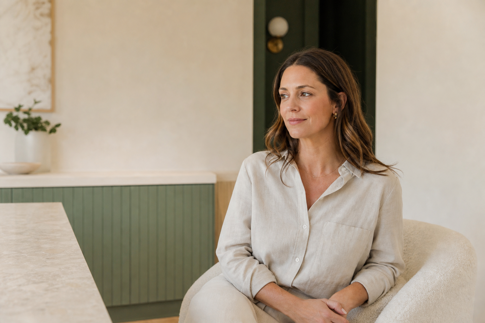
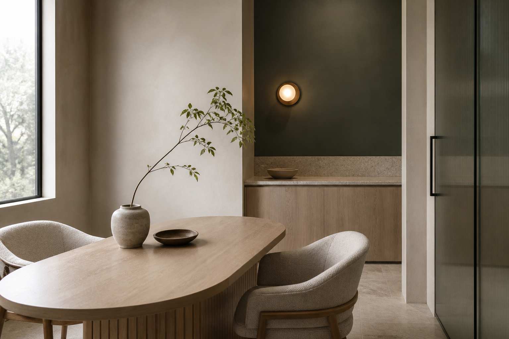

Credible first
Information hierarchy earns trust before atmosphere signals quality.
Recommended visual territory
Human enough to lower anxiety. Precise enough to earn trust. Restrained enough to feel premium without performing luxury.

The visual idea
A thoughtful editorial publication inside a warm contemporary clinic. Architecture supplies order; tactile materials and natural skin supply humanity.
Information hierarchy earns trust before atmosphere signals quality.
Mineral surfaces and daylight create ease without drifting into spa cliché.
Expressive type, disciplined spacing, and strong crops replace decoration.
Real age detail, natural expression, and quiet interaction preserve agency.
Color system
The site remains light overall. Deep green creates authority at key moments; clay adds warmth without turning the brand blush or cosmetic.
#18211C#264739#6F806F#A45A42#F8F5EF#EFE9DE#D8D1C5#FFFFFFJuniper Ink and Juniper carry text and action contrast. Moss is decorative rather than body text. Clay is restrained emphasis and boundary color, never the default CTA.
Typography
Newsreader carries point of view and calm. Manrope carries decisions, facts, forms, and navigation.
Know what fits before you decide.
45 minutes · $150 · No treatment obligation
Photography
Portraits and environments should feel observed rather than staged. Treatment imagery is supporting education—not spectacle.

Adults 28–55, varied skin tones, visible age detail, refined everyday clothing, natural expressions.
Oak, honed stone, linen, frosted glass, warm plaster, and one deep architectural accent.
Listening, preparation, equipment context, and provider attention before procedure close-ups.
Interface character
Fine borders, disciplined facts, short callouts, and clear controls let the visual identity work hardest where a visitor is making a decision.
Use test information only in this portfolio demonstration.
Creative guardrails
A focused direction becomes credible through what it consistently refuses.